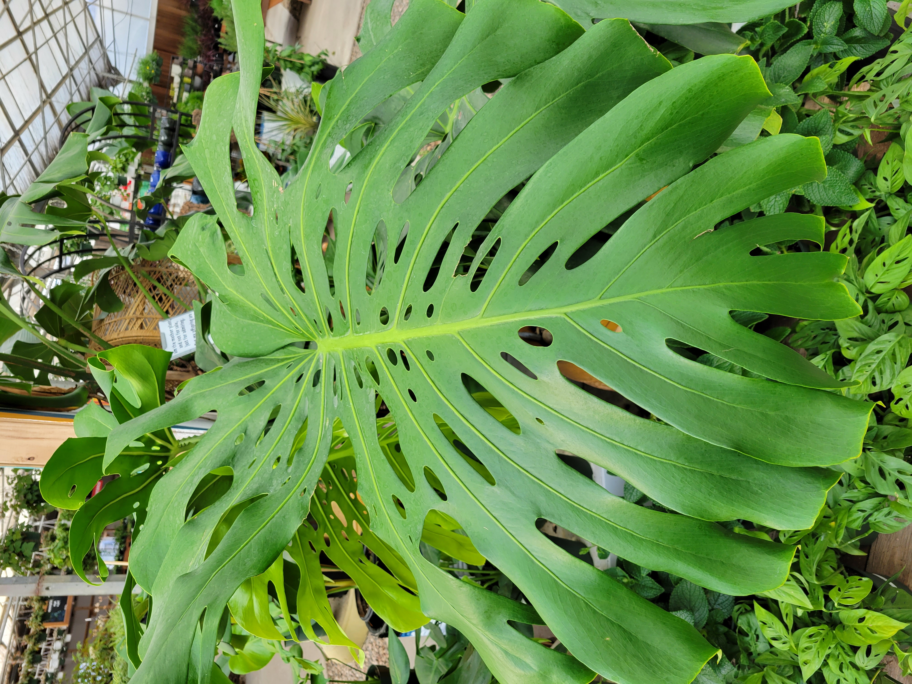

Welcome to the Houseplant Chasm
If you have fallen in love with houseplants, you are in the right place
How do you know?
- Windows of your home are crammed with plants
- You have 3 or more specimens of a given species, i.e. Philodendron
- Any of your plants have pet names
- You tell yourself you won't buy any more, but do anyway
My Philodendron Gloriosum isn't this big, but it will be some day!

page2
page3